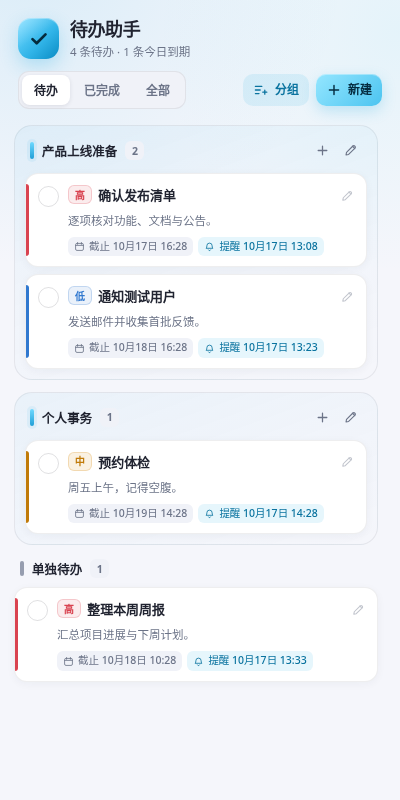
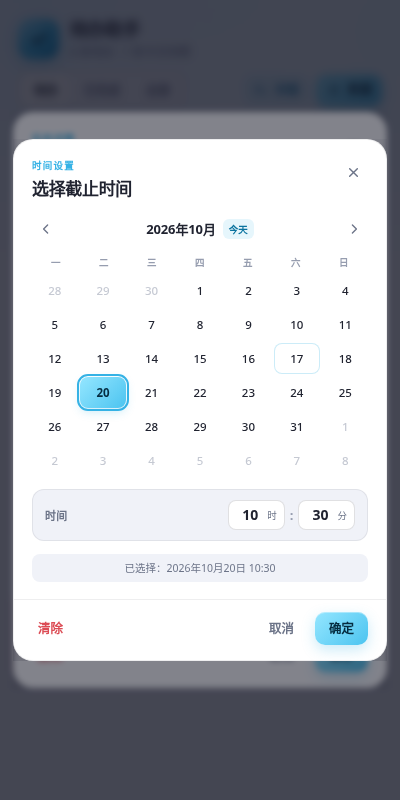

侧栏即开即用
点击工具栏图标，侧栏立即可用。浏览网页时也能随时记录下一件事。
Chrome & Edge 浏览器扩展
不用在应用之间来回切换。在浏览器侧栏里快速记录、分组、设置提醒， 用清晰的颜色标记优先级，把注意力留给下一件事。

功能
真正高频的待办功能，被收进一个随时可见、不会打断工作流的侧栏。
点击工具栏图标，侧栏立即可用。浏览网页时也能随时记录下一件事。
零散任务单独记录，相关事项收进命名分组，项目脉络始终清晰。
截止时间负责规划，提醒时间交给浏览器通知。错过的提醒也会在下次启动后补发。
高、中、低、普通四档彩色标签，让真正重要的事在列表里立即浮现。
基于 chrome.storage.local 保存，无账号、无上传、无追踪。
自动适配浅色与深色模式，在较窄的侧栏中也能保持完整、清晰。
界面
信息密度刚好，操作路径够短。日期时间选择器也完全显示在侧栏内，不再被浏览器原生弹窗裁切。
未完成事项按截止时间排序，不同优先级带有对应色条。完成、编辑与切换筛选都只需一次点击。

自定义月历与小时、分钟输入，支持“今天”快捷选择、清除和取消。窄侧栏中也不会被裁切。
所有内容保存在浏览器本地扩展存储中，不上传服务器，也不需要注册账号。